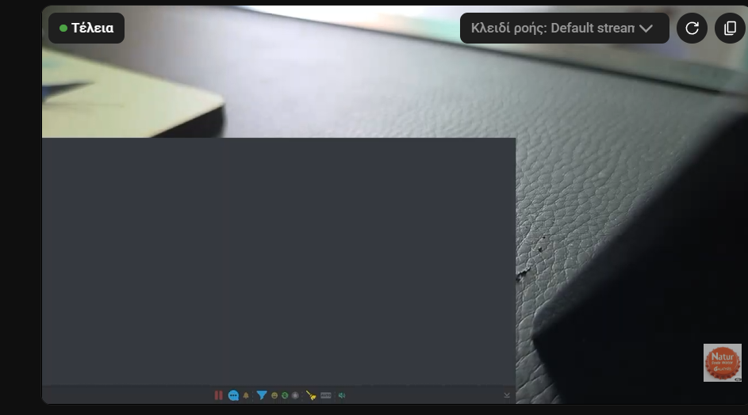

ปัญหา
หากเปิด URL แผงด็อกใน MELD แอปเดสก์ท็อป Social Stream หรือแอปที่ฝังเบราว์เซอร์อื่น อาจเห็นสี่เหลี่ยมสีเทาขนาดใหญ่และแถบเมนูด้านล่าง แผงด็อกทำงานอยู่ เพียงแต่พื้นหลังหน้ายังไม่โปร่งใส

เปิดการตั้งค่าสองรายการนี้
- เปิดการตั้งค่า Social Stream Ninja แล้วหา โอเวอร์เลย์แชตหลักและแผงด็อกควบคุม (Main chat overlay & control dock).
- ขยาย แถบเมนูด้านล่างแผงด็อก แล้วเปิด ซ่อนแถบเมนู (Hide menu bar).
- ขยาย โอเวอร์เลย์ แล้วเปิด บังคับพื้นหลังโปร่งใส.
- คัดลอก URL แผงด็อกที่อัปเดตแล้วไปแทน URL เก่าในแอปที่ใช้แสดง หากเปิดอยู่แล้ว ให้โหลดใหม่

URL ที่อัปเดตควรมีทั้ง transparent และ hidemenu โดยคงค่า session ของคุณเองไว้เหมือนเดิม
สิ่งที่ควรเห็น
พื้นหลังสีเทาและเมนูด้านล่างหายไป ข้อความแชตยังมองเห็นบนวิดีโอหรือเนื้อหาที่อยู่ด้านหลังแผงด็อก
แหล่งข้อมูลเบราว์เซอร์ใน OBS โปร่งใสโดยค่าเริ่มต้น การตั้งค่านี้จึงจำเป็นหลัก ๆ สำหรับ MELD หน้าต่างโอเวอร์เลย์เดสก์ท็อป และแอปที่ฝังเบราว์เซอร์อื่นที่ไม่ใช่ OBS
หากกล่องสีเทายังอยู่
- ยืนยันว่า URL ที่แสดงมี
transparentและhidemenu. - โหลดหน้าใหม่ หรือลบแล้วเพิ่มใหม่หลังเปลี่ยน URL
- คงค่า พื้นหลังหน้ากึ่งโปร่งใส, พื้นหลังหน้าสีเขียว, พื้นหลังหน้าสีขาว, โหมดสว่าง, และ โหมดมืด ปิดไว้
- ตรวจสอบว่าแอปที่แสดง URL รองรับพื้นหลังเบราว์เซอร์โปร่งใส